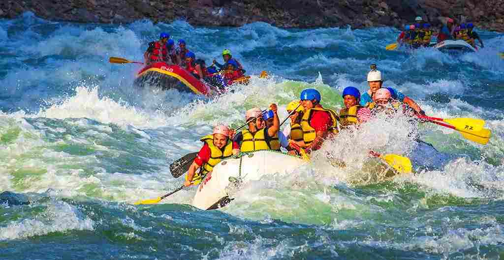
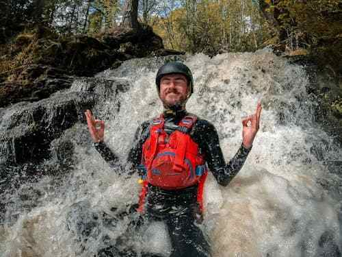

At Rapid Joy Whitewater Rafting, our purpose is simple: to turn every splash, paddle, and rapid into an unforgettable adventure. Our mission is to bring people closer to the wild beauty of rivers while reminding them that the best journeys mix excitement with laughter. We believe that courage grows when faced with rushing water, joy multiplies when shared in a raft, and memories last longer when they’re soaked through. Our creed is to paddle boldly, laugh loudly, and respect the river that carries us. Guided by the motto “Ride the Rapids, Find the Joy,” we exist to celebrate nature, adventure, and the thrill of getting just a little bit wet.


Rapid Joy Whitewater Rafting Company
History
Rapid Joy Whitewater Rafting began in 2008, when a group of river-loving friends decided to share their passion with others. With one raft and a big dream, they set out to turn every trip into an adventure filled with courage, laughter, and splashes. Today, Rapid Joy is still guided by the same spirit: ride the rapids, find the joy.